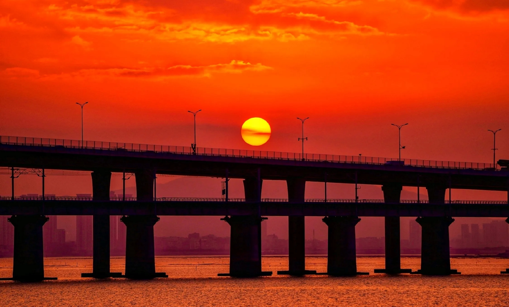

十里长堤
|  |
景点介绍十里长堤跨碧海，万年艰险变通途。海堤全长2212米，接连高崎与集美，故称高集海堤。 在这里，市民游客可了解十里长堤、宝珠屿、蔡林夕照、鳌园春晖等集美文化景观，感受“一精神三文化”和海堤精神，体验人文集美魅力。 十里长堤连接高集海堤、集杏海堤，可通览杏林大桥、集美大桥，远眺杏林湾、马銮湾，欣赏徐徐而来的高铁、地铁，视野开阔。集美区因势利导，将十里长堤打造为“集美之眼”，让游客在游玩中尽览集美之美。在挖掘自然景观资源和区域文化内涵基础上，十里长堤被划分为15个节点、六大功能区，给市民游客以自然之美与人文之美的双重体验。六大功能区包括日落观景区、草坡游戏区、野餐区、海洋主题科普区、地铁文化科普区和露营打卡区。 |